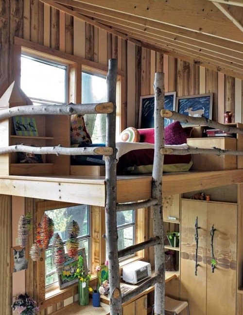
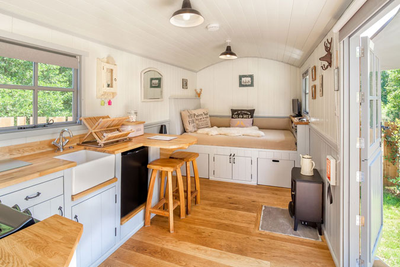
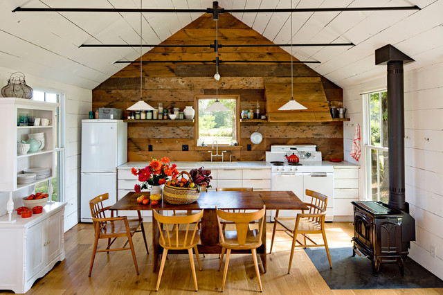
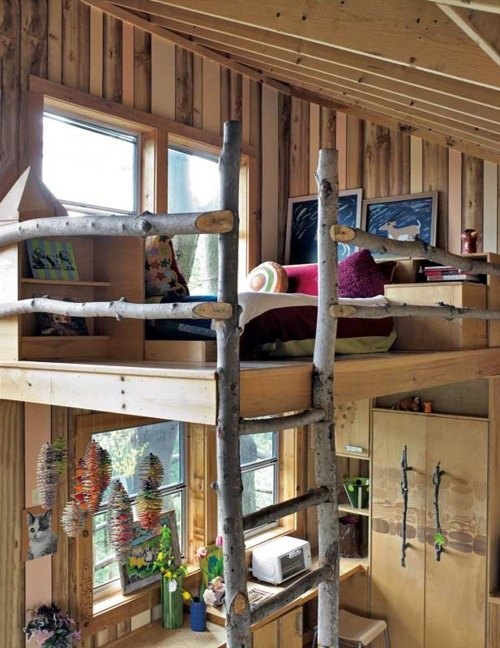
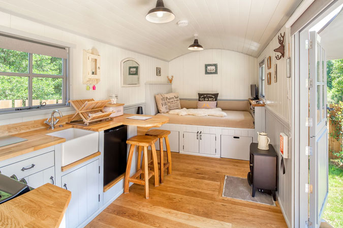
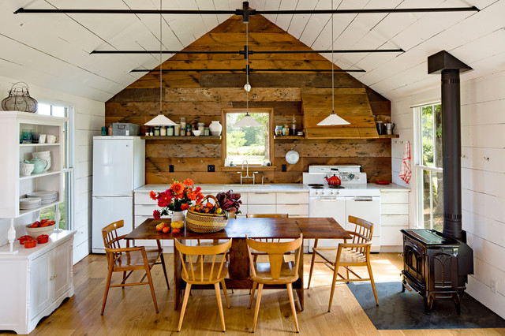

Have you ever packed up all of your belongings and moved away from your home? Well if the answer is yes then I have good news for you. Since
these types of tiny houses are on wheels, you can bring your home with you when you move to different places instead of leaving it behind.
(Ohana means family, no family left behind.)Another bonus is the obvious: With less square feet in your tiny house, there comes less
moving in time. But if you continue moving while already inside of your home, you don't have to pack anything up. You just have to make sure
it's secure. SCORE!!
Did you know that men and women in big homes spend about 2.5 hours a day doing some kind of household activity:cleaning, cooking, etc.
If you just remembered all those times washing the dishes or cleaning up your living room for the longest time..You will be so happy to
hear this. If you hadn't noticed, tiny houses have way less square feet than the average home. Most tiny houses on wheels are anywhere from
50 square feet to 600 square feet. While the average home is somewhere around 2,600 square feet. Many tiny housers have said that the average
amount of time they need to clean their homes is 30 minutes max.
Tiny houses require much less energy to heat and cool simply because they have much less interior air space. For the average home they use
8,000 pounds of CO2 per year for heating. While tiny homes use 558 pounds of CO2 per year for heating. For cooling, the average home
uses 4,000 pounds of CO2 per year. While tiny homes use 286 pounds of CO2 per year. The total amount of CO2 for the average home is
28,000 pounds per year. But the total for tiny homes is 2,000 pounds of CO2 per year.
On the left is a picture of the interior plans of a tiny house. On the right is the interior plans of the average home.
As you can see there is a large difference here. The average home in 1973 was 1,523 square feet. But in 2013 the size of the average home
was 2,598 square feet. This size is way bigger than the 200 square feet tiny house. No wonder it takes them 30 minutes to clean up their house.


 




